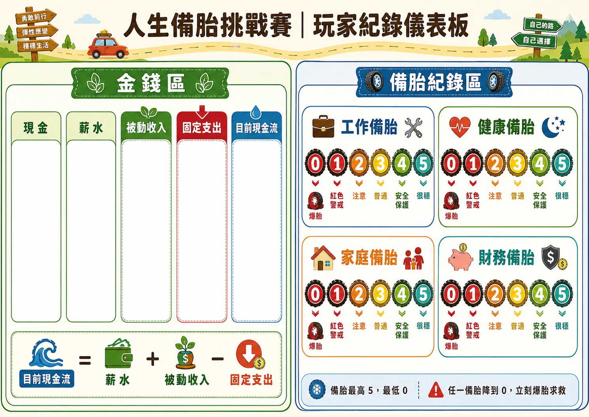

核心概念
四個備胎，決定你遇到事件時有多穩
備胎點數最高 5、最低 0。任一備胎降到 0 就爆胎求救；備胎達 4 以上會有事件減免或加成。
工作備胎
代表職涯能力、案源與成長彈性。高工作備胎可讓加薪、接案與工作事件更有利。
健康備胎
代表身體狀態與復原力。健康事件來臨時，點數越高越能降低損失。
家庭備胎
代表家人支持、人際互助與關係品質。家庭備胎能保護家庭支出與合作資產風險。
財務備胎
代表預算、儲蓄、風險管理。財務備胎可抵銷事件金錢損失，是最泛用的保護。
遊戲流程
每回合做四件事
玩家沿地圖外圈前進，透過格子效果與卡牌事件累積現金流、維護備胎，最後用紀錄表結算總分。
擲骰前進
沿地圖外圈順時針走；經過或停在現金流日都要結算。
執行格子
依停留格抽卡、買資產、補備胎或做選擇。
更新紀錄
調整現金、薪水、被動收入、固定支出與四個備胎。
爆胎處理
任一備胎降到 0 時，立刻選擇自己修補、求救或緊急借款。

滑鼠移到地圖格子，或在手機上點一下格子，就能查看該格要執行的動作。

玩家紀錄表
一張表追蹤金錢區與備胎區
重要格子
不用背每一格，先懂核心格子就能上手
地圖格子很多，但新玩家只要掌握現金流、資產、事件、機會與抉擇，就能理解遊戲節奏。
經過或停在都結算
結算薪水 + 被動收入 - 固定支出。這是玩家現金累積的主要來源。
翻 2 張，可買 1 張
只有停在資產市場才能買資產。買下後立刻更新被動收入、固定支出與現金。
突發狀況考驗備胎
事件可能扣錢、扣備胎、影響資產。若備胎降到 0，立刻爆胎求救。
好機會也需要取捨
機會卡常帶來成長；關鍵抉擇卡則要求玩家在短期現金和長期安全間選擇。
卡牌分類
先看卡面，點擊後再看詳細用途
卡牌依種類排列。頁面上不直接展開效果文字，點擊任一卡牌會開啟放大卡面與詳細說明。
遊戲結束
結算看的是資產、韌性與風險管理
時間到、三圈結束或教學局結束後，每位玩家依紀錄表結算總分。
總分 = 現金 + 儲蓄 + 被動收入 × 8 + 四個備胎總點數 × 700 - 負債 - 固定支出 × 3 + 成就分 + 人情卡分